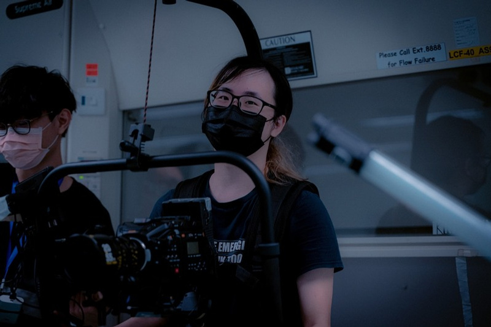

Technical Director, Imagine Division Limited
建立 LED ICVFX 製作棚基建、互動活動體驗、虛擬製作流程及跨媒體製作系統。
關於
Ahoy。我是 Timothy Yu，也有很多人叫我 Noodle；一個有十多年媒體與活動經驗、偏技術宅的影像製作人。
Profile
我喜歡推動邊界：由零開始建立 LED stage、用有限預算為 VTuber 製作 virtual concert，並把 real-time rendering、generative AI 和 storytelling 接成可以承受現場壓力的體驗。
不在測試硬件或寫 code 的時候，我多半都在試新 workflow，或者協助電影、教育、互動技術、活動製作及軟件團隊把想法變成能運作的系統。

由活動製作、電視視覺特效、教育科技，到虛擬製作及軟件架構的主要經歷。
建立 LED ICVFX 製作棚基建、互動活動體驗、虛擬製作流程及跨媒體製作系統。
為虛擬藝人及棚內製作設計動作捕捉、虛擬演唱會及即時串流流程。
設計 AI 驅動保險理賠軟件，並為受規管商業環境建立可延伸的基礎軟件架構。
開發擴增實境／混合實境（AR/MR）教學工具，支援化學教學、學生項目及教育媒體流程。
在電競活動、電視視覺特效、場地技術及現場音響工程中累積基礎，再集中發展虛擬製作。
常用工具及工作範圍的簡潔整理。
DaVinci Resolve、Adobe Premiere Pro、After Effects、Photoshop、Illustrator、Fusion、Blender、Lightroom 及 Unreal rendering。
ICVFX、LED Wall、nDisplay、攝影機追蹤、鏡頭校正、OCIO、時碼、同步鎖相、DMX、LiveLink、NDI 及 Spout。
Go、C++、JavaScript、Python、C#、Linux CLI、Docker、Proxmox、TrueNAS、Git、Perforce 及製作網絡架構。